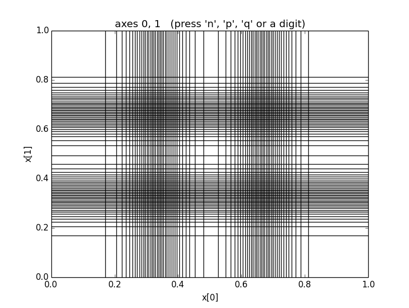

How vegas Works¶
vegas uses two adaptive strategies: importance sampling, and
adaptive stratified sampling. Here we discuss the ideas behind each,
in turn.
Importance Sampling¶
The most important adaptive strategy vegas uses is
its remapping of the integration variables in each
direction, before it makes Monte Carlo estimates of the integral.
This is equivalent to a standard Monte Carlo optimization
called “importance sampling.”
vegas chooses transformations
for each integration variable
that minimize the statistical errors in
Monte Carlo estimates whose integrand
samples are uniformly distributed
in the new variables.
The idea in one-dimension, for
example, is to replace the original integral over \(x\),
by an equivalent integral over a new variable \(y\),
where \(J(y)\) is the Jacobian of the transformation. A simple Monte Carlo estimate of the transformed integral is given by
where the sum is over \(M\) random points uniformly distributed between 0 and 1.
The estimate \(S^{(1)}\) is a itself a random number from a distribution whose mean is the exact integral and whose variance is:
The standard deviation \(\sigma_I\) is an estimate of the possible error in the Monte Carlo estimate. A straightforward variational calculation, constrained by
shows that \(\sigma_I\) is minimized if
Such transformations greatly reduce the standard deviation when the integrand has high peaks. Since
the regions in \(x\) space where \(|f(x)|\) is large are stretched out in \(y\) space. Consequently, a uniform Monte Carlo in \(y\) space places more samples in the peak regions than it would if were we integrating in \(x\) space — its samples are concentrated in the most important regions, which is why this is called “importance sampling.” The product \(J(y)\;f(x(y))\) has no peaks when the transformation is optimal.
The distribution of the Monte Carlo estimates \(S^{(1)}\) becomes Gaussian in the limit of large \(M\). Non-Gaussian corrections vanish like \(1/M\). For example, it is easy to show that
This moment would equal \(3\sigma_I^4\), which falls like \(1/M^2\), if the distribution was Gaussian. The corrections to the Gaussian result fall as \(1/M^3\) and so become negligible at large \(M\). These results assume that \((J(y)\:f(x(y)))^n\) is integrable for all \(n\), which need not be the case if \(f(x)\) has (integrable) singularities.
The vegas Grid¶
vegas implements the transformation of an integration variable
\(x\) into a new variable \(y\) using a grid in \(x\) space:
\[\begin{split}x_0 &= a \\ x_1 &= x_0 + \Delta x_0 \\ x_2 &= x_1 + \Delta x_1 \\ \cdots \\ x_N &= x_{N-1} + \Delta x_{N-1} = b\end{split}\]
The grid specifies the transformation function at the points \(y=i/N\) for \(i=0,1\ldots N\):
\[x(y\!=\!i/N) = x_i\]
Linear interpolation is used between those points. The Jacobian for this transformation function is piecewise constant:
\[J(y) = J_i = N \Delta x_i\]
for \(i/N < y < (i+1)/N\).
The variance for a Monte Carlo estimate using this transformation becomes
Treating the \(J_i\) as independent variables, with the constraint
it is trivial to show that the standard deviation is minimized when
for all \(i\).
vegas adjusts the grid until this last condition is
satisfied. As a result grid increments \(\Delta x_i\) are
small in regions where \(|f(x)|\) is large.
vegas typically has no knowledge of the integrand initially, and
so starts with a uniform \(x\) grid. As it samples the integrand
it also estimates the integrals
and use this information to refine its choice of \(\Delta x_i\)s, bringing them closer to their optimal values, for use in subsequent iterations. The grid usually converges, after several iterations, to the optimal grid.
This analysis generalizes easily to multi-dimensional integrals.
vegas applies a similar transformation in each direction, and
the grid increments along an axis
are made smaller in regions where the
projection of the integral onto that axis is larger. For example,
the optimal grid for the four-dimensional Gaussian integral
in the previous section looks like:
{kind=link}
{kind=link}
These grids transform into uniformly-spaced grids in \(y\) space.
Consequently a uniform, \(y\)-space Monte Carlo places the same
number of integrand evaluations, on average, in every rectangle
of these pictures. (The average number is typically much less one
in higher dimensions.) Integrand evaluations are concentrated
in regions where the \(x\)-space rectangles are small
(and therefore numerous) —
here in the vicinity of x = [0.5, 0.5, 0.5, 0.5], where the
peak is.
These plots were obtained by including the line
integ.map.show_grid(30)
in the integration code after the integration is finished.
It causes matplotlib (if it is installed) to create
images showing the locations of 30 nodes
of
the grid in each direction. (The grid uses 99 nodes in all
on each axis, but that is too many to display at low resolution.)
Adaptive Stratified Sampling¶
A limitation of vegas’s remapping strategy becomes obvious if we look
at the grid for the following integral, which has two Gaussians
arranged along the diagonal of the hypercube:
import vegas
import math
def f2(x):
dx2 = 0
for d in range(4):
dx2 += (x[d] - 1/3.) ** 2
ans = math.exp(-dx2 * 100.) * 1013.2167575422921535
dx2 = 0
for d in range(4):
dx2 += (x[d] - 2/3.) ** 2
ans += math.exp(-dx2 * 100.) * 1013.2167575422921535
return ans / 2.
integ = vegas.Integrator(4 * [[0, 1]])
integ(f2, nitn=10, neval=4e4)
result = integ(f2, nitn=30, neval=4e4)
print('result = %s Q = %.2f' % (result, result.Q))
integ.map.show_grid(70)
This code gives the following grid, now showing 70 nodes in each direction:
{kind=link}
The grid shows that vegas is concentrating on the regions
around x=[0.33, 0.33, 0.33, 0.33] and
x=[0.67, 0.67, 0.67, 0.67], where the peaks are.
Unfortunately it is also concentrating on regions around
points like x=[0.67, 0.33, 0.33, 0.33] where the integrand
is very close to zero. There are 14 such phantom peaks
that vegas’s new integration variables emphasize,
in addition to the 2 regions
where the integrand actually is large. This grid gives
much better results
than using a uniform grid, but it obviously
wastes integration resources.
The waste occurs because
vegas remaps the integration variables in
each direction separately. Projected on the x[0] axis, for example,
this integrand appears to have two peaks and so vegas will
focus on both regions of x[0], independently of what it does
along the x[1] axis.
vegas uses axis-oriented remappings because other
alternatives are much more complicated and expensive; and vegas’s
principal adaptive strategy has proven very effective in
many realistic applications.
An axis-oriented
strategy will always have difficulty adapting to structures that
lie along diagonals of the integration volume. To address such problems,
the new version of vegas introduces a second adaptive strategy,
based upon another standard Monte Carlo technique called “stratified
sampling.” vegas divides the \(d\)-dimensional
\(y\)-space volume into \(M_\mathrm{st}^d\) hypercubes using
a uniform \(y\)-space grid with \(M_\mathrm{st}\) stratifications on each
axis. It estimates
the integral by doing a separate Monte Carlo integration in each of
the hypercubes, and adding the results together to provide an estimate
for the integral over the entire integration region.
Typically
this \(y\)-space grid is much coarser than the \(x\)-space grid used to
remap the integration variables. This is because vegas needs
at least two integrand evaluations in each \(y\)-space hypercube, and
so must keep the number of hypercubes \(M_\mathrm{st}^d\) smaller than neval/2.
This can restrict \(M_\mathrm{st}\) severely when \(d\) is large.
Older versions of vegas also divide \(y\)-space into hypercubes and
do Monte Carlo estimates in the separate hypercubes. These versions, however,
use the same number of integrand evaluations in each hypercube.
In the new version, vegas adjusts the number of evaluations used
in a hypercube in proportion to the standard deviation of
the integrand estimates (in \(y\) space) from that hypercube.
It uses information about the hypercube’s standard deviation in one
iteration to set the number of evaluations for that hypercube
in the next iteration. In this way it concentrates
integrand evaluations where the potential statistical errors are
largest.
In the two-Gaussian example above, for example,
the new vegas shifts
integration evaluations away from the phantom peaks, into
the regions occupied by the real peaks since this is where all
the error comes from. This improves vegas’s ability to estimate
the contributions from the real peaks and
reduces statistical errors,
provided neval is large enough to permit a large number (more
than 2 or 3) \(M_\mathrm{st}\) of
stratifications on each axis. With neval=4e4,
statistical errors for the two-Gaussian
integral are reduced by more than a factor of 3 relative to what older
versions of vegas give. This is a relatively easy integral;
the difference can be much larger for more difficult (and realistic)
integrals.